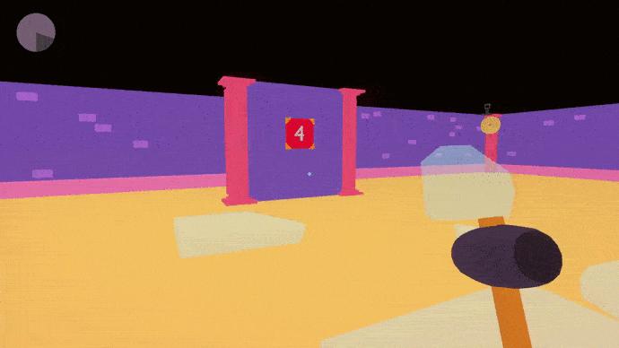

A W4ll Out



A chaotic first person puzzle game, where you have to break the 4th wall in order to escape from a "friendly" AI.
Overview and Inspiration
- This game was made with Unity by a team of 5 for the Game Gen Game Jam, which lasted one week. The theme of the jam was "The 4th Wall" and "Loops" and we decided to take it literally and make breaking walls with a hammer the core concept.
- My responsibilities were
- Design some of the levels
- Make all the 3D art
- Design the narrative, write the AI dialogue script and implement it into the game, along with its subtitles
- Work on the rest of the sound effects
Impact and feedback
The game turned out really wel, ranking #1 on the Overall and Gameplay categories. But most importantly, me and rest of the team are quite proud with the result. Some of the reviews we got are:"All I can say is that this game is insane in terms of gameplay. Congratulations." - itchio user Blinx24
"This game is so fun, replayable, and the idea is super original. I love the Portal vibes and they way the levels adapt so they are hard to master." - itchio user Xavier2679
"What a wonderful game! So far is the best I've played. Simple, with clear and well implemented mechanics "- itchio user Zernimax